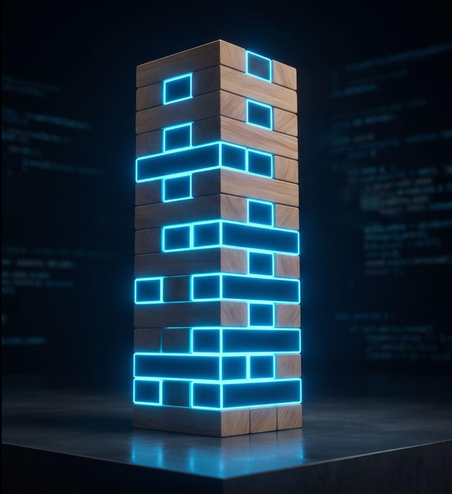

SUPPLY CHAIN RESILIENCE
//
WORKFLOWS & WORKFORCE HELD TOGETHER
Structural Resilience of an Agentic Supply Chain
Margin leakage happens where disconnected Plan, Source, Make, Fulfill & Deliver workflows meet a stretched planning workforce. Autonomous AI agents splice directly into those missing blocks — turning brittle silos into a self-stabilizing network.

UNBRACED SILO STACK
45% 1-YR EBITDA AT RISK
Without AI Agents
Lagged POS exports, blind Tier-2 vendor dependencies, manual FEFO picking, and unaudited freight & trade claims leave critical handoffs hollow when heatwaves, mandi spikes, or port delays strike.


THE FORTIFIED AGENTIC MESH
-62% RECOVERY · ₹2,199.3 CR/YR
With 78 CPG AI Agents
Every SCOR persona is reinforced by a 2-to-4 agent suite combining 24/7 signal sensing, deterministic OR-Tools & TimesFM solvers, and governed 1-click ERP staging — zero rip-and-replace.